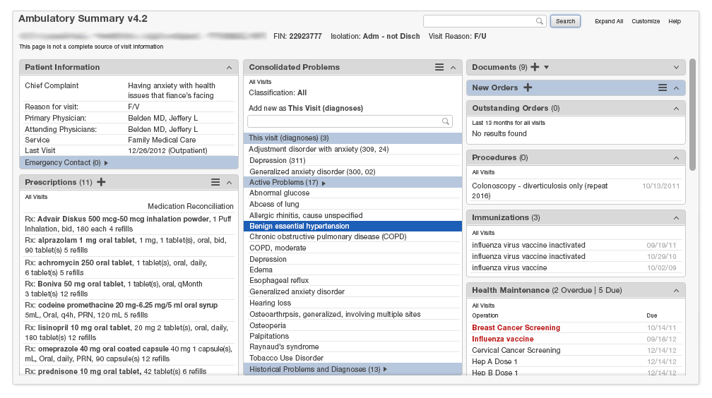

EHR Style Guide v1.5, 2-15-2014 Feedback
7
Human Factors Principles
How humans see, read, think, and decide affects how they act. Keeping that in mind, we can cater to their inner processors for optimal performance on a human level.
How People Perceive
We See in Gestalts
Our visual system is wired to perceive whole shapes or gestalts rather than disconnected forms.
Gestalt is a German word for form or shape. In English, it refers to wholeness. When you walk into a room, you get an overall sense of what’s going on and the emotional tone of the room. When you view a webpage for the first time, you also get a similar overall sense of wholeness about the site: whether it’s appealing, whether it looks modern or out of date, and whether it looks clean or cluttered. Here are some of the elements that add to the overall Gestalt of a design.
Proximity
One way our minds like to see in gestalts is via proximity. Distance between objects determines how we perceive them. If things are close together we group them. Not only do we group them, but when it comes to designs, we tend to think they are grouped for a reason.
{kind=link}
{kind=link}
Example 2: Here in this medication reconciliation view, the medications are broken into groups, and these groups are placed in the same column. With a glance one can tell there are different groups (columns) without focusing to read what those groups are because each medication in each list is close to its similar category.
{kind=link}
Closure
Another way we perceive in gestalts is through closure. Our brain will fill in visual blanks and make short cuts. This helps us make sense of the world quickly, but we need to keep it in mind when designing. If used well and with purpose, this closure can help the user see the gestalt we want them to see. Sometimes unintended gestalts can be created and these gestalts should be avoided.
Example: Here is a classic example of how our minds take lines or curves and build objects out of them, even though there is no circle or rectangle, we see a circle and a rectangle.
{kind=link}
Similarity
Similarity is another way our brains perceive groups. Visual elements that look alike are perceived as belonging to a group. You can group things by size, shape, or color – and color is particularly strong. In your designs, by grouping visual elements this way, you can make the interface simpler and easier to use.
Example 1: We perceive the red dots in this image as belonging to a group.
{kind=link}
Example 2: Proximity has already distinguished the proximal groups as categories but now the use of color creates a new group. There are now green medications for approved choices, normal ones that have yet to be selected or deselected, and faded medications for the medications deselected. That is similarity grouping in action.
{kind=link}
Similarity
Our minds also like to reduce complex things by giving things symmetry. We tend to take complex images and simplify them around a perceived center.
Example 1: Here we see who our minds like to see two symmetrical diamonds rather than see other shapes.
{kind=link}
Example 2: Take a look at the example below. At first glance we see two columns rather than a series of individual entries, which are creating the illusions of columns.

Figure / ground
Figure / ground is the gestalt principle that explains how we like to perceive things in two main planes, the figure, which becomes the foreground and everything else, which becomes the background. Whatever is the focus of our attention becomes the figure and everything else shifts into the background.
Example 1: In the first example, the figure (dollar sign) is seen as separate from the ground or background (the green rounded rectangle. This is the kind of design to aim for. The figure clearly seems more important than the ground.
{kind=link}
Example 2: Here is an example of an ambiguous figure/ground relationship. This example is the classic from gestalt psychologist Edgar Rubin where we can see both faces and a vase in the same image depending on where we put our attention.
{kind=link}
Continuity
In the real world we combine all of these principles at the same time which affects how we perceive.
Continuity is the term for groupings of objects created by their alignment. Our brains expect to see a contour as a continuous object.
{kind=link}
{kind=link}
{kind=link}
Example 2: The following example uses several of the gestalt principles, symmetry in space allocation for the lists, proximity for the medication lists source and category groupings, and similarity for selected and deselected medications. Figure and ground is also in play, note how the dark text seems closer to us and the faded text further away.
I Can't See it but I Use it
We use our peripheral vision to get a big picture of what we are seeing and use it to help decide what to focus on.
Our visual system (the eyes and the brain systems that work with them) do an amazing job of seeking and providing visual information mostly without our conscious awareness. We are barely aware that only the very central part of our vision provides sharp-focused detail rich with color information, and that the periphery of our vision (outside of the central “peephole”) is fuzzy and bereft of color. However, that peripheral part of the vision is able to detect features such as motion, edge, and contrast that guide our brain in it’s “visual query” of the view before us.
Our brain makes rapid eye movement to sample the environment, seeking out details determined by what we are trying to accomplish. We see what we need to see. If we are looking for a friend, we see faces in the crowd. If we are finding our way through the crowd, we see the openings.
Because the peripheral part of our vision detects motion, we find those animated ads so annoying. Although we may wish to ignore them, we are designed to notice them. Our eyes are drawn to things that stand out or draw contrast to the norm. Our brains recognize threats in an environment, and it’s our peripheral vision that is on the lookout for those big differences.
Example 1: Our eyes do a quick visual query seeking out visual elements and creating meaningful details that help us accomplish our basic goals. What we notice in the scene below will be different depending on whether we are driving, deciding whether we need to mow the lawn, or assessing whether the weather will be suitable for a picnic 2 hours from now.
Example 2: When looking at the display below, we think we instantly see this, but we don’t. But what we really see at any instant is more like the next image. We only have a small area in focus at any moment. Our visual brain sees red text (the preattentive attribute) and is drawn to it more than the rest of the scene. Then the eye automatically scans to the next point of interest.
- We think we see this
 ...but we don't. We see this.
...but we don't. We see this.
{kind=link}
A good thing to keep in mind is that a peripheral glance is what tells people where they are and what to expect. It also helps us decide what to focus on. Only our focused vision communicates what the display is really about and we can only really ‘see’ what we are focused on.
Design tip: It is a good idea to provide feedback or error messages near where people are already focusing. While we use our peripheral vision to orient ourselves and look for things to draw our attention, we also try to ignore it when we are already focused on something else.
Preattentive Attributes
The little things people notice visually and understand quickly, so quickly that we have only noticed it at an unconscious level.
We notice some visual features more quickly than others. Examples include color, size, shape, orientation, and motion. We call these things that stand out to us preattentive attributes. It is our fast thinking mind that is making sense of everything in our visual field at an unconscious level that make preattentive attributes work. This fast thinking subconscious part of our minds either tells us what to focus on or gives us options of what to focus on. Things that are different or stand out from the rest of the environment (examples below) are all in play with preattentive attributes.
Example: Here are visual preattentive attributes

How People Think
The Two Ways People Think
Everybody has two modes of thinking, a fast one and one that takes focus. When you lower complexity you help people use the fast one and save energy for the focused one.
Have you ever driven yourself home when you really want to drive yourself to the market but you were so busy thinking about other matters you only caught yourself as you pulled into your street or driveway? This is a good example of our two systems of thinking. It’s no surprise that the human brain is an amazing thing with many complex processes. We can characterize these many processes as two systems or different modes of thinking; system 1, fast thinking and system 2, focused thinking. Daniel Kahneman wrote a great book about these systems and we are using his ideas here.
The fast thinking system operates automatically and quickly, takes little to no effort, and doesn’t even have a sense of voluntary control. This is the system that lets us...
- see that something is larger than something else
- answer simple computations like 2+2 = 4
- read words on a billboard
- understand simple sentences
- make rapid and simple associations like stereotypes
- take advantage of preattentive attributes
The focused thinking system switches our attention to mental activities that take more mental effort. It is effort thinking that we often think of as our experience of agency, choice and concentration. This is the system that lets us...
- focus on listening to one voice in a noisy room
- recall information like addresses and phone numbers
- check the validity of a complex argument
- look for one particular piece of information in a long article
When creating an application its helpful to ask yourself, “Are there opportunities to convert slow thinking tasks into fast thinking mode?” Make the application perform the complex calculations, do the rank-ordering, and concisely present the key information so that people can have the energy to do the focused thinking that only the human can do.
Working Memory
Working memory takes work and is limited to four things, try to design without making doctors and patients use working memory.
Working memory is your memory that you need for less than a minute. This is sometimes called short term memory. This is the type of memory we use when someone tells us a phone number and we have to keep it in our heads till we write it down or punch it into our phone. This type of memory takes focused thinking.
Design tip: Try not ask people to look at information on one page and then remember it and enter it into another field on another page.
If you ask people to use their working memory, make sure they can finish that working memory task before you have them do anything else, find anything else, tell them anything else, or give them more options. Working memory is easy to interrupt.
People only keep three to four items at a time in working memory. The way we display bits of information can influence our working memory capability. If we chunk items, we can remember a longer string of digits than if we don’t. For example, a phone number is easier to remember with chunking. Compare these numeric strings:
- Harder 9121889874
- Easier 912-188-9874
- (912) 188-9874
It’s much harder to merely dial the phone with the first example. If you have users enter phone numbers, allow them to enter with or without the intervening hyphens or parentheses, but display them in the easier to read formats.When you can’t limit information displayed to only four items, try to offer a chunking method like the phone number example.
Example: Here is a visual example of working memory. We can only keep about three to four different items in our working memory. If we add another item, we drop one.
Cognitive Load
Loads are heavy, even cognitive (mental activity) ones. Help lighten the load.
Our brains have to manage three types of loads: cognitive, visual, and motor. Cognitive load is the hardest type of load, followed by visual, then motor.
Here are some considerations for lightening cognitive load:
- Focused (System 2) thinking causes a greater cognitive load. People can accomplish about ten minutes of focused attention before needing a short break, unless we are particularly interested in the task or in a flow state.
- People can’t truly multi-task. We can only attend to one task at a time. When we think we’re multitasking, we’re actually switching tasks rapidly, but this tires us quickly and can cause mistakes.
- Recognition is easy, remembering is hard. We can recognize complex things like a map of Europe but most of us would likely have a hard time drawing it ourselves.
- Problem solving and calculation are hard, while learning from experience and performing learned actions is easy.
Example: In the first illustration, we see the mental work a doctor does while reviewing a medication list. This task involves reading the list, recognizing the drug name, remembering if it is used for hypertension, and then recalling from memory if it’s a maximum dose or not for each medication.
{kind=link}
Example: In the illustration below, we lighten the cognitive load by sorting the list alphabetically by diagnosis, the physician needs to use much less effort.
{kind=link}
If the maximum dosage had also been somehow indicated, that would be yet another thing the doctor could recognize rather than have to know, recall, and think about, thus reducing cognitive load even further.
{kind=link}
Citations
We See in Gestalts
Wolfe, J. M., Kluender, K., R.; Levi, D, M., Bartoshuk, L, M., Herz, R. S., Klatzky, R, L., Lederman, S. J. (2008). Gestalt Grouping Principles Sensation and Perception (2nd ed.). Sunderland, MA: Sinauer Associates.
Johnson, J (2010). Simple guide to understanding user interface design rules: Designing with the mind in mind. Burlington, MA: Morgan Kaufman.
Rubin, E. (1921) Visuell Wahrgenommene Figuren : Studien in psychologischer Analyse. Kobenhaven: Gyldendalske boghandel.
Images
Figure 7.2 Gestalt_closure [SVG file]. (2008). Retrieved January 28, 2014 from: http://en.wikipedia.org/wiki/File:Gestalt_closure.svg
Figure 7.8 Ruben, E. (psychologist). (1921). Faces-Vase [SVG file], Retrieved January 28,2014 from: http://en.wikipedia.org/wiki/File:Cup_or_faces_paradox.svg
Gallery 7.2 Few, Stephen (2013): Data Visualization for Human Perception. In: Soegaard, Mads and Dam, Rikke Friis (eds.). he Encyclopedia of Human-Computer Interaction, 2nd Ed. Aarhus, Denmark: The Interaction Design Foundation. Available online at http://www.interaction-design.org/encyclopedia/data_visualization_for_human_perception.html
I can’t see it but I use it
Larson, A., & Loschky, l. (2009). The contributions of central versus peripheral vision to scene gist recognitions. Journal of Vision, 9 (10:6), 1-16.
Johnson, J (2010). Simple guide to understanding user interface design rules: Designing with the mind in mind. Burlington, MA: Morgan Kaufman.
Ware, C. (2005). Visual queries: The foundation of visual thinking. In Knowledge and information visualization (pp. 27-35). Springer Berlin Heidelberg.
Weischenk, S.M. (2011). 100 things every designer needs to know about people. Berkeley, CA: New Riders.
Pre-attentive Attributes
Atienza, M., Cantero, J. L., & Escera, C. (2001). Auditory information processing during human sleep as revealed by event-related brain potentials. Clinical Neurophysiology, 112(11), 2031-2045.
Appelbaum, L. G., & Norcia, A. M. (2009). Attentive and pre-attentive aspects of figural processing. Journal of Vision, 9(11), 1-12.
Egeth, H. E., Yantis, S. (1997). Visual attention: Control, representation, and time course. Annual Review of Psychology, 48, 269-297.
Few, S. (2009). Now you see it: Simple visualization techniques for quantitative analysis. Oakland, CA: Analytics Press.
Kourtzi, Z., & Kanwisher, N. (2000). Cortical regions involved in perceiving object shape. Journal of Neuroscience, 20, 3310-3318.
Krummenacher, J., Grubert, A., & Müller, H. J. (2010). Inter-trial and redundant-signals effects in visual search and discrimination tasks: Separable pre-attentive and post-selective effects. Vision Research, 50(14), 1382-1395.
Van der Heijden, A. H. C. (1996). Perception for selection, selection for action, and action for perception. Visual Cognition, 3(4), 357-361.
Images
Figure 7.10 Few, S. (2004). Data Presentation: Tapping the power of visual perception. Information Week. Retrieved from: http//www.informationweek.com/software/information-management/data-presentation-tapping-the-power-of-visual-perception/d/d-id/1026932?
The Two Ways People Think
Evans, J., & Frankish, K. (Eds.) (2009). In two minds: Dual processes and beyond. New York, NY: Oxford University Press.
Evans, J. (2008). Dual-processing accounts of reasoning, judgment, and social cognition. Annual Review of Psychology 59: 255-78.
Kahneman, D. (2011). Thinking, fast and slow. New York, NY: Farrar, Straus and Giroux.
Stanovich, K.E. West, R.F. (2000). Individual Differences in Reasoning: Implications for the Rationality Debate. Behavioral and Brain Sciences 23, 655-65.
Working Memory
Cowan, Nelson (2008). What are the differences between long-term, short-term, and working memory? Progressive Brain Research. 169 (169): 323–338.
Cowan, Nelson (2001). "The magical number 4 in short-term memory: A reconsideration of mental storage capacity". Behavioral and Brain Sciences 24: 87–185.
Engle, R. W., Tuholski, S. W., Laughlin, J. E., Conway, A. R. (September 1999). "Working memory, short-term memory, and general fluid intelligence: a latent-variable approach". Journal of Experimental Psychology: General 128(3): 309–31.
Revlin, Russell (20013). Human cognition: Theory and practice. New York, NY: Worth Publishers.
Towse, J. N., Hitch, G. J., Hutton, U. (April 2000). "On the interpretation of working memory span in adults". Memory & Cognition 28 (3): 341–8
Cognitive Load
DeLeeuw, K.E., & Mayer, R.E. (2008). "A comparison of three measures of cognitive load: Evidence for separable measures of intrinsic, extraneous, and germane load". Journal of Educational Psychology 100 (1): 223–234.
Paas, F., Renkel, A., & Sweller, J. (2004). Cognitive load theory: Instructional implications of the interaction between information structures and cognitive architecture. Instructional Science 32: 1–8.
Paas, F., Tuovinen, J.E., Tabbers, H.K., & Van Gerven, P.W.M. (2003). "Cognitive load measurement as a means to advance cognitive load theory". Educational Psychologist 38 (1): 63–71.
Plass, J.L., Moreno, R., & Brünken, R., ed. (2010). Cognitive Load Theory. New York: Cambridge University Press.